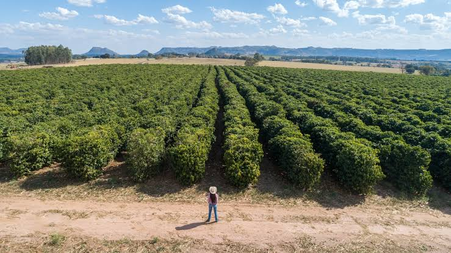

We are a family-owned coffee plantation located in the lush hills of Colombia. Our mission is to provide the highest quality coffee while promoting sustainable farming practices and supporting our local community.

Our Coffee Varieties
We offer a variety of coffee beans to suit every taste:
- Arabica
- Robusta
- Batian
- Ruiru 11
The Coffee Production Stages
Our coffee goes through several stages of production to ensure the highest quality:
- Planting
- Harvesting
- Processing
- Drying
- Packaging
Coffee Plantation Activities
They include:
- Pruning
- Is the selective removal of non-productive, old, or competing branches to improve light penetration, airflow, disease control, and cherry quality.
- Harvesting
- Is the collection of ripe coffee cherries when they turn a deep red or purplish color.
- Drying
- (Also called the natural or unwashed method) is the oldest and simplest way to turn freshly picked coffee cherries into export-ready green beans.
Contact Us
Never hesitate to call us via:
Phone: 0743434784
Contact us for more information